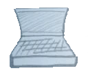

New Laptop Time!

My employer, Canonical, has a "bring your own hardware" policy, trusting that their engineers would rather choose and administer their own personal laptops, rather than put up with standardized remotely administered corporate hardware.
My current much loved Thinkpad 460p has served faithfully since 2015, but is showing its age, sometimes struggling under the workload. Plus, its integrated graphics chipset doesn't have the power to play modern games with my kiddo. Battlezone 98 runs fine, but Civilization VI (2016) is annoyingly choppy, at about 9 frames per second.
This summer I received the three-year cash-in-hand bonus earmarked as a "hardware refresh bonus". It's been many years since I've bought a laptop with the attention to detail that comes with spending one's own money. Even the current aging Thinkpad was a gift from a former employer. So it's been a decade or more since I've seriously specced out a new laptop. This post exists as a place to scribble down reminders of a few things I learned along the way.
I have a few constraints:
- About the same size as the current Thinkpad's 14 inches, or maybe a tiny bit bigger.
- I work on Ubuntu Linux, so I'll need to check it plays nicely.
- It should support modern gaming.
- Plenty of monitor ports, and/or the grunt to daisy chain them.
- Is it too much to ask for a headphone jack in 2022?
- Ability for me to open it up, swap out the battery, drives, RAM.
- 3:2 display would be nice, but these are rare.
- A budget of $2,000 (saving a bit of my bonus for other hardware-related things.)
Reading around, I got sort-of up to speed on components.
CPU
The CPU buzz is around Intel's 12th generation (aka "Alder Lake"). These are
"hybrid" CPUs, combining large high performance cores with smaller high
efficiency cores on a single chip. They come in about 30 different variants,
with a naming convention that looks like, for example: Intel Core i7-12700H.
This consists of:
- A brand, eg. "Intel Core"
- A modifier specifying a market segment, one of:
- i3 Casual use
- i5 Multitasking, light gaming
- i7 Gaming, content creators
- i9 Slightly faster, more parallel cores.
- A single or double digit generation, eg the latest is "12".
- An SKU, eg the "700" above, a three or four digit number which roughly corresponds to the feature-set or performance - larger is better. These are only comparable within a single generation, they adopt wildly different conventions in different generations.
- A single or double letter suffix, eg "H" for "high performance", taken from an idiotic irregular table.
The major alternative to an Intel processor is AMD. These aren't the current season's darlings of the performance benchmarks, although they do include several respectable contenders that might be great for my needs, as you can see in the following performance comparison.
Benchmarks
These laptop CPU performance benchmarks are culled from www.cpubenchmark.net, sorted by the benchmark score. I included the top 20, plus a handful of notable others that I looked up along the way. The 'bench' column measures relative performance under a variety of benchmark workloads which fully utilize all cores. The higher this number, the better.
The number of cores is given as (p)erformance + (e)fficiency, for hybrid processors.
| CPU | Cores | Clock | Cache | Bench | Price | Laptop models & other notes |
|---|---|---|---|---|---|---|
| i9-12900HX | 8p+8e | 5.0GHz | 30MB | 36 | $606 | |
| i7-12800HX | 8p+8e | 25MB | 35 | $457 | Thinkpad P16 ($2340). | |
| i9-12950HX | 8p+8e | 30MB | 34 | $590 | ||
| i7-12850HX | 8p+8e | 25MB | 31 | $428 | ||
| i9-12900HK | 6p+8e | 24MB | 30 | $635 | Dell XPS 15 ($2950). | |
| i9-12900H | 6p+8e | 24MB | 29 | $617 | ||
| i7-12700H | 6p+8e | 24MB | 27 | $457 | Dell XPS 17/15 ($2500), Acer Nitro 5, System76 Onyx & Gazelle. This CPU is what I ended up getting. |
|
| AMD Ryzen 9 6900HX | 8 | 25 | Fastest AMD processor. | |||
| i7-12650H | 6p+4e | 24MB | 25 | $457 | ||
| i5-12600HX | 25 | $284 | Fastest 12th gen i5. Suspiciously cheap. | |||
| AMD Ryzen 9 PRO 6950H | 24 | |||||
| i7-12800H | 6p+8e | 24MB | 24 | $457 | ||
| AMD Ryzen 7 PRO 6850H | 8 | 24 | Thinkpad P15v. | |||
| AMD Ryzen 9 6900HS | 24 | ASUS ROG Zephyr G14. | ||||
| AMD Ryzen 9 PRO 6950HS | 24 | |||||
| AMD Ryzen 7 PRO 6800H | 23 | |||||
| i9-11980HK | 2.6GHz | 23 | $583 | Fastest Intel 11th gen. | ||
| AMD Ryzen 7 6800HS CEd | 23 | |||||
| AMD Ryzen 9 5900HX | 23 | |||||
| i9-11950H | 8 | 2.6GHz | 24MB | 22 | $556 | |
| ... | (I skipped a bunch here) | |||||
| i7-1280P | 6p+8e | 4.8GHz | 24MB | 20 | $482 | Best Framework. |
| AMD Ryzen 7 5825U | 8 | 18 | Best Dell Inspiron 15". | |||
| i7-1260P | 4p+8e | 18MB | 17 | $438 | XPS 13 plus, X1 Carbon gen 10, Thinkpad P14. | |
| i7-1250U | 2p+8e | 12MB | 11 | $426 | ||
| i5-6200U | 2 | 2.8GHz | 3MB | 3 | My current Thinkpad T460. |
Notice my current Thinkpad's processor at the very bottom of this list, which is 10x slower than the CPU I ended up getting.
Graphics
There are plenty of otherwise fantastic laptops which don't include blazing fast dedicated Nvidia or AMD graphics processors, but instead only come with relatively humdrum graphics support integrated with the CPU. Although integrated GPUs have improved massively in the last few years, this wouldn't be fast enough to run modern games well.
To compensate, I considered pairing such laptops with an external GPU enclosure (eGPU), into which a top-of-the-line desktop GPU card can be plugged. I'm still wistfully curious about this path, but in the end opted to do without this complication.
Here's a table of the top laptop GPUs, culled from gpu.userbenchmark.com. Unlike the CPU table, this isn't the top N performers, because GPUs can get crazy fast and expensive, so I'm looking for something middle-of-the-pack. It's just a selection of GPUs I looked up while researching particular laptop models.
The 'performance' column is the combined result of a variety of gaming benchmarks, the higher the better. The 'position' column compares the performance against all other benchmarked GPUs.
| GPU | Performance | Position | Laptop models & other notes |
|---|---|---|---|
| Nvidia GeForce RTX 3080 | 130 | 24th | System76 Onyx option. |
| Nvidia GeForce RTX 3070Ti | 122 | 27th | System76 Onyx option. |
| Nvidia GeForce RTX 3070 | 114 | 30th | |
| Nvidia GeForce RTX 3060 | 87 | 58th | Best XPS 17. System76 Gazelle. Acer Nitro 5. This is the GPU I ended up getting. |
| Nvidia GeForce RTX 3050Ti | XPS 15 option. | ||
| Nvidia GeForce RTX 3050 | XPS 15 option. | ||
| AMD Radeon RX 6800S | 85 | 58th | |
| AMD RX 6700M | 79 | 65th | |
| Nvidia RTX A1000 4GB GDDR6 | 45 | 114th | Thinkpad P16(certified) |
| Nvidia T1200 | 42 | 118th | Thinkpad P15v |
| Nvidia GTX 1050Ti | 30 | 144th | My current Windows gaming desktop. |
| Intel Iris Xe | 17 | 207th | Integrated. Framework. XPS 13 Plus. |
| Intel HD 520 | 4 | 402nd | Integrated. My current Thinkpad T460. |
Notice the two 'integrated' entries at the bottom of the table, one of which is my current laptop, a full 20x slower than the GPU I ended up getting. The improvement ought to speed Civilization VI up to around an entirely excessive 180 frames per second. \o/
Laptop models
With the above in mind, I read some reviews, and a few contenders emerged:
Framework
The Framework was massively tempting. It brings an entirely unprecedented - some might hopefully say revolutionary - focus on user-repair and upgradability. Rather than soldering and gluing the whole thing together, all the Framework's components, up to and including the motherboard and screen, are replaceable using a single screwdriver. This is deeply appealing for geeks, who want to be able to repair or upgrade.
The downside that gave me pause is it is only available with integrated Intel-powered graphics. If they had a model including the vastly superior Nvidia or AMD accelerated graphics, I would have just bought one months ago, instead of prevaricating. But that complication, coupled with the fact that the Framework's performance is only mid-range for a 2022 model, put me off sufficiently to look around at other options.
Dell XPS 13 plus
The Dell XPS 13 plus looks wonderful, with official Ubuntu verification, no less, but just isn't physically big enough for me, and is noticeably underpowered. And the Dell 15 inch models seem way overpriced, for the spec, easily exceeding my $2,000 budget.
HP One Dev
The HP One Dev looks like a fabulous machine, a colleague just got one and is very happy with it. But again, it only has integrated graphics.
Mac Book Pro
I considered this, repaved to run Ubuntu, of course, but to be honest, as exquisite as the hardware was at one point, it seems somewhat stagnant and directionless now, fifteen years later. Not unimpressive, but doesn't really grab me.
System76
I looked at a whole bunch of other laptops at this point, scouring the "best gaming laptops of 2022" lists at Toms Hardware and elsewhere. Eventually my attention was drawn to System76, who, on reflection, should have been folks I checked out earlier in the process.
The Oryx is just a few hundred over my budget, even with the current $300 off. But a tricked-out Gazelle seems to check all the boxes.

They have a reasonably high-ranked 12th generation Intel i7 CPU, which seems to achieve good performance without wading into the diminishing returns of pricey i9 models. Same for the reasonably-placed Nvidia 3060 graphics. And the screen is just magic (judged by my admittedly idiosyncratic personal criteria.)
They support the lightning fast open source coreboot firmware, and System76 are a leading contributor to the project. They sell with Linux-pre-installed, and produce their own Ubuntu-based Linux distribution, Pop!OS (Although stock Ubuntu runs just fine too.).
Going with Nvidia graphics instead of AMD does yield a performance boost, but the downside is that I'll have to wrestle with the opaque proprietary drivers from the famously uncooperative Nvidia. But in a nice gesture, System76 documents this process, and lots of other stuff, such as how to replace internal components yourself, on their website.
Because it's proprietary closed source, Nvidia drivers have always lagged behind AMD's open source offerings in terms of compatibility. In particular, Nvidia graphics hasn't worked with the new Linux Wayland display server. Reading around, my impression is that it's not ready yet, but might be by 22.10 (which is next month!?), so I could stick with the older XOrg display server for now, without fearing that I'll get marooned there.
There are other downsides. The keyboard is reputedly mediocre, and I wish it didn't have a numpad. Standard layout tenkeyless for the win, every time. But I almost always use a USB mechanical keyboard anyhow. Also, with such greedy components, the battery life kinda sucks when the GPU is on and the machine is busy. But in the last 12 months, the only time I've run my current laptop not plugged in is... never? So I guess I don't care.
So thisis what I ordered, with the 15" display and the 3060 graphics.
But I did that thing where I order it with minimal RAM and SSD storage, to replace with my own parts. So I'll have some screwdriver work to do after it arrives. The payoff is that I save about $150 by paying market rates for these components. In fact I already have a tremendous SSD I can use, leftover from this year's Chia cryptocurrency farming experiments, so that part is free. This means I can stay within my $2,000 budget, with $9 to spare after shipping and taxes.
Memory
It's generally fine to just buy whatever RAM is recommended by your vendor. But the most reliable and cheapest memory will often be the slowest, or at least the one running at a clock speed which is most widely supported by different motherboards. In order to get the fastest memory for our particular laptop, we need to understand a few things.
Physical form factor
The current standard for RAM is DDR4. For laptops, the slim physical form factor is known as SoDIMM. A single circuit board of memory chips is a module. A module connects into a motherboard slot.
DDR5 is supported by Intel's 12th generation processors, and AMD's newest Ryzen 7000 series. This uses a different physical connection on the motherboard, and is rare thus far, outside of systems above my budget.
So I'm looking for DDR4 in a SoDIMM module. Got it.
Ranks & Channels
A module contains from one to eight 64-bit wide logical blocks of data storage (single, dual, quad or octal rank.) The chips on a module provide x1, x2, x4 or x8 banks.
number of chips x chip banks / 64 = module rank
eg. Using sixteen x4 chips will provide a single rank of memory on the module (16x4/64=1).
Whereas using 32 x8 chips will provide a module of 4 ranks (32x8/64=4).
This is sometimes annotated on the module using a notation like 1Rx4, as in one rank of x4 chips.
The reason this matters is that access to ranks is interleaved, so multiple ranks can provide access to data at multiples of the rate provided by a single rank. In order to take advantage of this, the motherboard must provide a commensurate number of memory access channels.
The datasheet for my Gazelle says the motherboard has two memory slots, and supports dual-channel access. This could be fully utilized by either inserting a single dual-rank module (which is more expensive), or, as in the timeworn heuristic, by inserting two half-sized single rank modules (e.g. two 16GB modules to make 32GB total.)
Clock frequencies and latency
RAM has a clock frequency, measured in thousands of MHz, but "double data rate" chips transfer data on both the clock's rising and falling edges, so the speed of transfer is better measured in mega-transfers per second (MT/s), the higher the better.
However, it takes more than one clock cycle to perform an action. These latency values are sometimes quoted as a series of four integers - the number of clock cycles to perform particular operations, e.g. 18-18-18-43. But these are often abbreviated to just the first number, representing read access time, known as "CAS Latency" (CL), eg. CL 18, which tends to be representative. The lower this number is, the better.
The actual performance of the memory is determined by the product of a clock cycle duration (eg. 1ns at 1000MHz) and the latency number (e.g. 1ns * 18 = 18ns)
Further, the motherboard needs to support the RAM's clock speed. In practice, the motherboard will negotiate with the inserted modules to find a commonly supported frequency, the same or less than the minimum of the rated memory access frequencies of the memory, the motherboard, and the CPU, using an over-complicated and hard-to-predict process controlled by BIOS settings. I have no experience with this but it sounds well worth avoiding altogether by making sure we get modules with a rated frequency that exactly matches the advertised clock frequency of our motherboard.
For my new Gazelle, the manual says that is 3,200MHz.
Availability, pricing and scams.
Finding CL26 latency RAM at 3,200MHz is easy, for around $70. For lower latencies the price goes up to about $375 for CL16, but that isn't even in stock anywhere.
At one point, after much searching, I found some CL16 on newegg.com:

And it is only $128! Carefully checking the specs, including those on the manufacturer's site, using the shown model number 'CMSX32GX4M2A3000C16', this is exactly what we want. 2x16GB at 3200MT/s at CL16.
While checking it out, I clicked around a bit, and at one point found:

This came along with a number of other negative reviews, stating customers had been sent memory modules that were fake, ie. imitations of the purported reputable manufacturer, they didn't work at the advertised clock speeds, and the seller had gone dark on them, taking weeks to respond to queries, and not sending replacements until Newegg got involved. Seems wisest to skip this.
Eventually I found an alternative:

Yes! DDR4 in a SoDIMM package, 2x16GB modules at 3,200MHz and 18CL. The latency isn't quite as good, but it sounds legit, so I'll take it!
And with that, I'm done. Now just awaiting the deliveries to arrive...